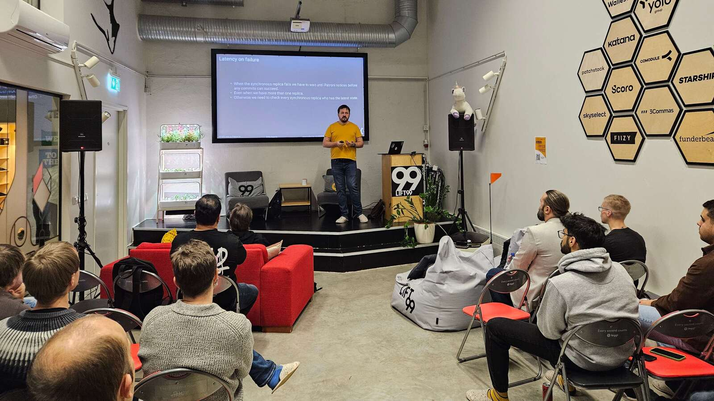

Meetup #8 was hosted by Cybertec at Lift99
Telliskivi Hub and had 4 presentations:
- "Patroni v4 & quorum commit" - by Ants Aasma, Senior Consultant at Cybertec [slides]
- "Spot VMs and Postgres" - by Kaarel Moppel, an independent PostgreSQL Consultant [slides]
- "When Autovacuum Met FinOps: A Cloud Romance" - by Mayur, DB Specialist@Veeam [slides]
- "What is a large database?" - a Lightning Talk by Heikki Linnakangas, cofounder of Neon, PostgreSQL
developer
Meetup.com event link

Photos from event are at
Google
Photos, and
you could upload yours photos there too!
By the way: a great resource for ideas (and learning) is the PostgreSQL Wiki with it's "Presentations" section.
And as last, a short reminder as usual:
-
Signup to our mailing list at
google groups
-
If you have some topic for a talk (or even just an idea, we can help with weedback etc) then definitely
submit your talk!
-
Bookmark our website pgug.ee